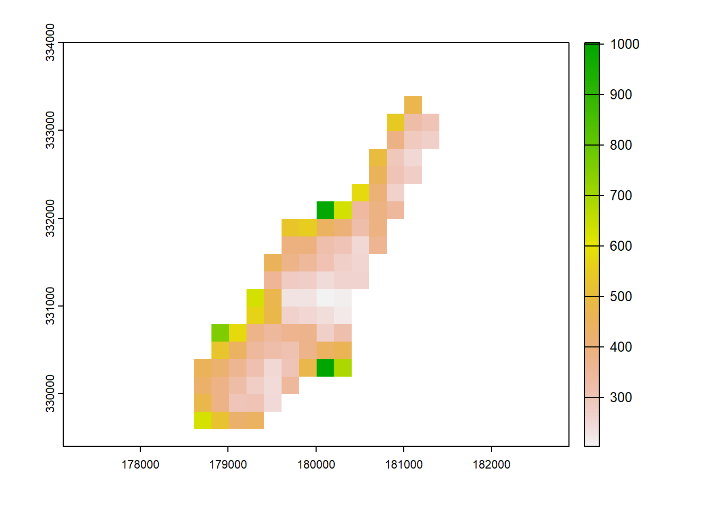
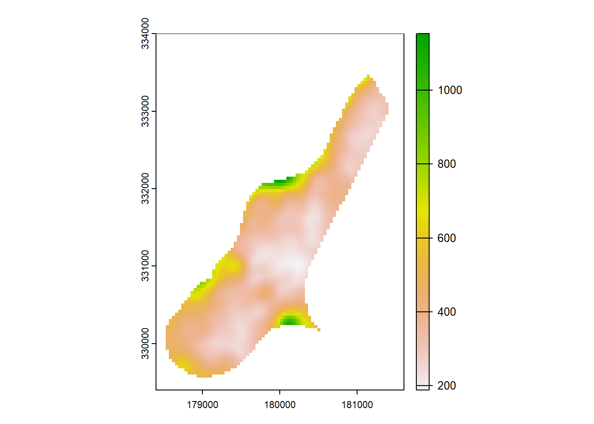

install.packages("terra")
library(terra)Presented by Mitch Rudge
PhD Candidate, UQ Sustainable Minerals Institute
Twitter: 
This is post is associated with a workshop that was held on the 24th Feb 2022
Workshop description Mitch walked through the basics of raster analysis using R. In particular, he focused on the relatively new Terra package, which is set to replace the extremely popular Raster package. A basic understanding of R will help, but the workshop will be aimed at beginners with no prior knowledge.
What we will cover:
- Raster and vector basics
- Introducing the Terra package
- Creating, Importing and exporting rasters
- Dealing with coordinate reference systems
- Naming and sub-setting SpatRaster layers
- Raster summaries
- Raster data manipulation
- Compatibility between Raster and Terra
- Options to allow the processing of large files
- A real world example with drone data
- A fun new package called Layer
You will need installations of R, RStudio and Terra.
1. Raster and vector basics
Rasters divide areas into a grid of rectangles of equal size. Each rectangle holds one or more value for a variable of interest.
Vectors consist of a series of coordinates that make points, lines or polygons.
 http://gsp.humboldt.edu/
http://gsp.humboldt.edu/
2. Introducing the Terra package

Terra is set to replace the extremely popular Raster package. It is written by the same group of developers at r spatial, led by Robert Hijmans. This means that Terra is compatible with Raster - with some serious advantages.
Advantages of Terra over Raster. It’s faster - unlike Raster, Terra is mostly written in C++, making it much faster for many operations.
It’s simpler - Terra does away with the complex data structure of Raster like RasterLayer, RasterStack and RasterBrick. We will go into this later.
For now, lets install and load Terra.
3. Creating, Importing and exporting rasters
The following examples are largely based on examples from the official manual
The rast() function is used to create and import SpatRasters.
To create a SpatRaster from scratch:
x <- rast(nrows=108, ncols=108, xmin=0, xmax=10, ymin = 0, ymax = 10)
values(x) <- 1:ncell(x)And, probably more useful, to import a raster from a file:
f <- system.file("ex/meuse.tif", package="terra") #example data within terra
r <- rast(f)But instead of system.file() (which is looking inside the terra package), point directly to a raster file.
plot(r)
To write a SpatRaster to file, we can use the the writeRaster function:
x <- writeRaster(r, "output.tif", overwrite=TRUE)
x4. Dealing with coordinate reference systems
Getting the coordinate reference systems correct is a very important, and sometimes tricky, aspect of geospatial analysis.
There are two main classes of coordinate reference systems, have a look here for a pretty good.
Angular coordinate reference systems - these represent the vertical and horizontal angles between the point on the surface and the center of the earth (see figure).
 Image reference: https://rspatial.org/terra/
Image reference: https://rspatial.org/terra/
To get location using an angular CRS, we require a pair of coordinates and a reference datum; a model of the shape of the earth. WGS84 is probably the most widely used global datum, where GDA94 / 2020 are commonly used Australian datums.
Projected coordinate reference system - here, angular coordinates have been converted to a Cartesian system, making it is easier to make maps and calculate area etc. These require a projection, a datum and a set of parameters. Projections include Mercator, UTM and Lambert.
Defining a CRS in Terra
Terra recommends using the EPSG database, as PROJ.4 is no longer fully supported.
To look up an EPSG code, go to https://epsg.org/ and find your CRS.
When you know the EPSG code associated with your data, you can assign it:
crs(x) <- "EPSG:27561" Be careful, this defines the CRS but doesn’t change the underlying data. It is not generally recommended that you project raster data because it results in a loss of precision.
5. Naming and subsetting SpatRaster layers
Naming the layers of a SpatRaster is pretty straightforward, using the names() function.
s <- rast(system.file("ex/logo.tif", package="terra"))
names(s)[1] "red" "green" "blue" names(s) <- c("a", "b", "c")
names(s)[1] "a" "b" "c"Sub-setting the layers of a SpatRaster is also a pretty simple operation.
You can either use square bracket notation [], the subset() function, or $ notation.
From the manual, here is an example using the R logo:
subset(s, 2:3) #will select band 2 and 3
#because we changed the names from red, green, blue to a, b c.
s[[c("a", "b")]] #will also select band 2 and 3
s$a #will select the a (red) bandNote that unlike with Raster, there is no need for different classes like Raster stacks/layers/bricks.
6. Raster summaries
Now that we know how to import a Raster, define its CRS, and select the bands we are interested in, its a good time to start investigating its values.
The global() function can be used to extract values like the average, mean and max cell values. Using the elevation data we imported earlier, we could work out the highest cell on the map with:
max_h <- global(r, "max", na.rm=TRUE)
max_h max
test 1736The humble histogram is another useful tool when getting a handle on raster data. Terra allows you to create a frequency distribution histogram with hist():
hist(r)
Or if a boxplot is more your style, you can use boxplot():
boxplot(r)
7. Raster data manipulation
There are a huge number of functions within Terra for data manipulation, but here are a few that might be useful. ### Extend and trim Often, we will find a lot of white space consisting of NA’s around our Raster. To remove this, we can use the trim() function. Conversely, to add white space to a raster (say, to match the extent of another Raster), we can run the extend() function.
To demonstrate this functionality, we will first add a lot of white space to our elevation raster using extend, before removing it with trim.
extended <- extend(r, 50)
trimmed <- trim(extended)Aggregate and Resample
These are used to change the resolution of a SpatRaster.
Aggregate creates a new SpatRaster with a lower resolution. Users need to provide the factor by which the raster will be reduced.
agg <- aggregate(r, fact = 5, fun = 'mean')
plot(agg)
You can see that the resolution has been reduced, by a factor of five in this case.
In reality, we will often need to combine rasters from different sources that have different origins and resolutions; this will require us to match the resolution, the origin and the extent. For this, the resample function is the way to go. To demonstrate this, we can first change the origin of the raster we just aggregated.
origin(agg) <- c(10.5, 10.5)Then we can resample the original raster, r, using the new agg raster with different resolution and origin.
rsm <- resample(r, agg, method= 'bilinear')Crop
Cropping is one of the most widely used operations when working with Raster data. To demonstrate a simple crop, we will need to use a SpatVector: the other major data class used by Terra.
On the data set we have been working on, we will first use the spatSample() function, another handy tool.
Here, we will randomly generate one point on the elevation raster.
samp <- spatSample(r, 1, as.points=TRUE, na.rm=TRUE)Now we can make a buffer centered on this point using the buffer() function.
buf <- buffer(samp, width = 200)
plot(r)
plot(samp, add=TRUE)
plot(buf, add=TRUE)
Now we can crop the elevation raster to the buffered area.
cropped <- crop(r, buf)
plot(cropped)
Mask
Notice that the buffer was a circle, but the cropped area is square. Why? Because the crop command uses the extent of the object which is always a rectangle. If you wanted to maintain the shape of the buffer, you will want to use mask()
mask <- mask(r, buf)
mask <- trim(mask) #we can trim down all the NA values using the trim function
plot(mask)
Stretch
Another task is to stretch values to a given range. For example, classification can require data that is normalised to 8bit (0-255). This can be handy if you want to normalise rasters on different scales, such as elevation in m AGL and reflectance in DN.
In terra, this is as easy as:
str <- stretch(r) #defaults to 0-255
global(str, "range", na.rm=TRUE) range max
test 0 255Focal
The focal() function can be used to clean and smooth rasters. Focal() uses a moving window with size w and a function to average neighboring cells. Lets do that with the elevation dataset:
f <- focal(r, w=5, fun="mean")
plot(f)
8. Compatibility between Raster and Terra
If you have grow acustomed to using Raster, don’t worry, it is not difficult switch between Raster classes (RasterLayer, RasterStack etc) and SpatRaster using the rast() function.
Here is an example.
First install the Raster packages, which is available on CRAN.
install.packages("raster")
library(raster)Now, using the sample data loaded into Raster, we can create a Raster stack of the r logo.
stac <- stack(system.file("ex/logo.tif", package="terra")) #This is a raster stack
rst <- rast(stac) #now this is a SpatRasterIts that simple. And to change this back to a Raster object:
stac <- raster(rst) #now this is a RasterStack9. Options to allow the processing of large files
Terra has some settable options that can help to improve performance. Have a look through them with ?terraOptions
Particularly useful options include tempdir, which provides a default location for files to be written. This can help prevent your C drive being clogged with temp files.
Also handy is memfrac, which lets us stipulate how much RAM terra is can use - from 0-0.9.
Check the current options with terraOptions()
Set options using terraOptions(memfrac=0.2, tempdir = "C:/temp/terrafiles").
10. A real world example with drone data
In this example, we will use some of my drone data collected from savanna woodlands in north Australia.This is a typical example where we have an orthomosaic, which was derived from a camera (RGB), and a canopy height model, which was derived from LiDAR point cloud.
First, we need to reduce the size of the orthomosaic (1.3+ GB is too big). But in reality, we might want that much resolution depending on what we are trying to do.
You don’t need to run the below code, but this is what I did to reduce down the large orthomosaic.
orthopath <- ".../hacky_sac/2022-02-23 Basic raster analysis with R/plot1_ortho.tif"
ortho_reduced_path <- "...2022-02-23 Basic raster analysis with R/plot1_ortho_reduced.tif"
ortho <- rast(orthopath)
res(ortho) #check the resolution
#now lets reduce it down with aggregate
#note the filename variable lets us write directly to file
aggregate(ortho, fact = 10, fun = 'mean', filename = ortho_reduced_path)
ortho_reduced <- rast(ortho_reduced_path)
res(ortho_reduced)Download the reduced orthomosaic here
And the chm here
The first thing to do is load the .tifs as SpatRasters in R.
homefolder <- "..../Downloads" #where did you download the files to?
chm_path <- paste0(homefolder, "/", "plot1_chm.tif")
ortho_path <- paste0(homefolder, "/", "plot1_ortho_reduced.tif")
#now read in the files using terra
chm <- rast(chm_path)
ortho <- rast(ortho_path)This is an example of needing to merge rasters with different geometries into a single raster. Before we can do this, we need to make sure the crs, resolution, origin and extent match.
#do the crs match?
crs(chm) == crs(ortho)
#do the origins match?
origin(chm) == origin(ortho)
#do the resolutions match?
res(chm) == res(ortho)
#do the extents match?
ext(chm) == ext(ortho)We should see that the CRS matches, but nothing else.
The resample() function can match the geometries. If we wanted to keep the higher resolution of the orthomosaic, we can run:
chm_resampled <- resample(chm, ortho, method = "bilinear")
#now, geometry should match
res(chm_resampled) == res(ortho)
origin(chm_resampled) == origin(ortho)
ext(chm_resampled) == ext(ortho)On the right track. lets plot them to have a look.
plot(chm_resampled)
plot(ortho)
We can see that even though they have the same extent - as enforced by the resample() - there are a lot of blank cells around the CHM.
Lets get rid of those blank (NA) cells using the trim() function.
chm_resampled <- trim(chm_resampled)
plot(chm_resampled)
That’s better, now lets crop the orthomosaic using the CHM.
ortho_cropped <- crop(ortho, chm_resampled)Now everything should match, and we can finally combine these layers into a single SpatRaster object. For this, you can simply concatenate the layers: c(layer1, layer2, layer3).
combined <- c(ortho_cropped, chm_resampled)
plot(combined)
The band names don’t make a lot of sense at this point, so we can rename them using the names() function.
names(combined) <- c('red', 'green', 'blue', 'chm')Finally, prior to doing some analysis, we might want to stretch the chm to 8bit - so its not under-weighted compared to the RGB data. This calls for the stretch() function.
combined$chm <- stretch(combined$chm)
plot(combined)
Now we have a raster stack we can work with!
11. A fun new package called Layer
One fun little package I stumbled on recently is called layer. It doesn’t really serve a purpose in terms of analysis, although I’ll use it to make figures that demonstrate the raster data-sets used in analysis.

Unfortunately, Layer calls for Raster data, but as we know, it’s easy to convert Raster to SpatRaster objects.
But before we get into that, lets further reduce the resolution of the combined SpatRaster, as there is a lot going on in the background of Layer and its pretty slow.
combined_lowres <- aggregate(combined, fact = 10) #10x less rows and columnsNow we can load the layer and raster packages:
install.packages("layer")
library(layer)Now we can provide the layers to tilt_map, then plot_tilted_map, to create a nice looking tilted stack that illustrates our data. Note within the tilt_map function, we convert the SpatRaster to Raster with the raster() function.
tilt_map_1 <- tilt_map(raster(combined_lowres$red))
tilt_map_2 <- tilt_map(raster(combined_lowres$green), x_shift = 0, y_shift = 50)
tilt_map_3 <- tilt_map(raster(combined_lowres$blue), x_shift = 0, y_shift = 100)
tilt_map_4 <- tilt_map(raster(combined_lowres$chm), x_shift = 0, y_shift = 150)
map_list <- list(tilt_map_1, tilt_map_2, tilt_map_3, tilt_map_4)
plot_tiltedmaps(map_list,
layer = c("value", "value", "value", "value"),
palette = c("bilbao", "mako", "rocket", "turbo"),
color = "grey40")
About the author
Mitch is in the final year of a PhD with the Sustainable Minerals Institute, where he surveys savanna trees with drones to inform mine-site restoration. To process and analyse drone data - LiDAR, photogrammetry, multispec - Mitch has been forced to pick up skills in geospatial analysis using R and python.

Email mitchel.rudge@uq.edu.au